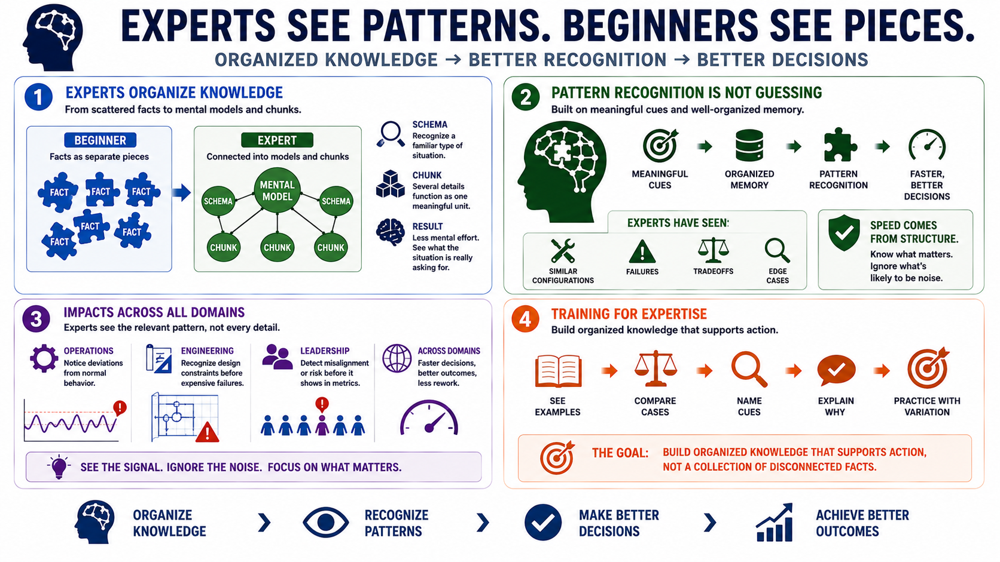

Knowledge, Mental Models, and Pattern Recognition
Connecting to LMS... Progress: in progress

Narration
Experts organize knowledge differently from beginners. Beginners often remember facts as separate pieces. Experts connect those facts into mental models, schemas, and chunks that represent how the domain works. A schema helps a person recognize a familiar type of situation. A chunk lets several related details function as one meaningful unit. These structures reduce mental effort and make it easier to see what the situation is really asking for.
Pattern recognition is not the same as guessing. Good pattern recognition depends on meaningful cues and well-organized memory. An expert troubleshooting a system, reviewing a design, or making an operational decision may move quickly because they have seen similar configurations, failures, tradeoffs, and edge cases before. Their speed often comes from structure: they know which signals usually matter and which details are likely to be noise.
This has implications far beyond technical troubleshooting. In operations, experts notice deviations from normal behavior. In engineering, they recognize design constraints before they become expensive failures. In leadership, they may detect misalignment or risk in a project plan before the issue appears in a dashboard. Across domains, expert performance depends on seeing the relevant pattern without being distracted by every available detail.
Training for expertise therefore needs more than definitions. Learners need examples that reveal how experts sort information. They need to compare cases, name cues, explain why one detail matters and another does not, and practice recognizing patterns with enough variation to avoid brittle memorization. The goal is to build organized knowledge that supports action, not a collection of disconnected facts.